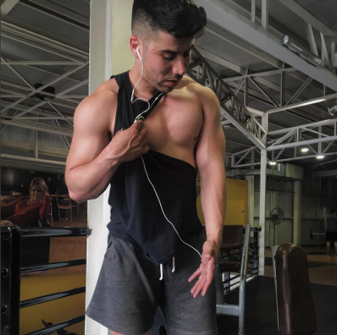

Desarrollo pectoral científico:
cómo construir músculo con precisión

Si entrenas pecho todas las semanas, cargas pesado y aun así no ves desarrollo real, probablemente no te falta esfuerzo: te falta precisión.
El crecimiento del pectoral no depende solo de levantar más peso o hacer más repeticiones. Depende de cómo aplicas la fuerza sobre el músculo.
Muchos entrenan pecho… pero no lo estimulan correctamente.
El enfoque correcto
Para desarrollar el pectoral de forma eficiente, hay tres variables que marcan la diferencia:
- Dirección de la fuerza según las fibras musculares.
- Control del tiempo bajo tensión.
- Rango de movimiento real.
No es más volumen. Es mejor estímulo.
1. Dirección de las fibras
El pectoral mayor tiene distintas orientaciones de fibras: clavicular, esternal y costal. Por eso no todos los presses generan el mismo estímulo.
Aplicación práctica
- Press inclinado: mayor énfasis en la porción superior.
- Press plano: estímulo más global.
- Press declinado: mayor activación de la porción inferior.
Un estudio de la University of São Paulo (2024) demostró que variar el ángulo del press modifica significativamente la activación de las distintas regiones del pectoral.
scielo.br2. Control excéntrico
La fase excéntrica —cuando bajas el peso— es clave para la hipertrofia porque genera más tiempo bajo tensión y mejora el reclutamiento de fibras.
- Mayor daño muscular controlado.
- Más tiempo bajo tensión.
- Mejor conexión mente-músculo.
Bajar el peso sin control = perder la mitad del estímulo.
3. Rango de movimiento completo
Acortar el recorrido puede permitirte levantar más peso, pero reduce la estimulación efectiva. Más peso no siempre significa más hipertrofia.
Un estudio de la University of Tampa (2023) encontró que trabajar en rangos completos genera mayores ganancias de hipertrofia comparado con rangos parciales.
ut.eduEl error más común
Entrenar pecho con ego:
- ✖ Mucho peso.
- ✖ Poco control.
- ✖ Recorridos incompletos.
- ✖ Mala conexión mente-músculo.
Resultado: progreso limitado, molestias articulares y desbalance muscular.
Cómo aplicarlo correctamente
- Varía ángulos de press durante la semana.
- Controla la bajada entre 2 y 3 segundos.
- Trabaja el rango completo sin perder tensión.
- Evita bloquear completamente los codos en exceso.
- Prioriza calidad sobre carga.
Si no sientes el pectoral… no lo estás entrenando bien.
Conclusión
El desarrollo muscular no es aleatorio. Es el resultado de aplicar principios fisiológicos correctamente. Cuando entiendes cómo funciona el músculo, dejas de entrenar por intuición y empiezas a entrenar con intención.
No necesitas más ejercicios. Necesitas mejor ejecución.
Construye músculo con intención
Si entrenas duro pero no ves cambios, probablemente no necesitas hacer más: necesitas ajustar técnica, estímulo y progresión.
Asesoría por WhatsApp